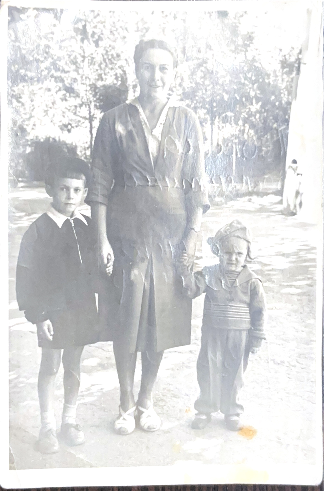
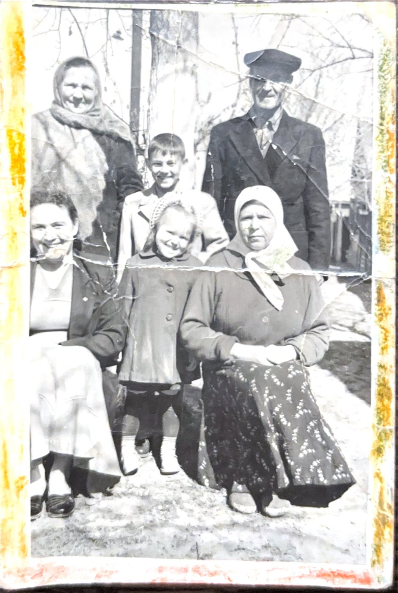
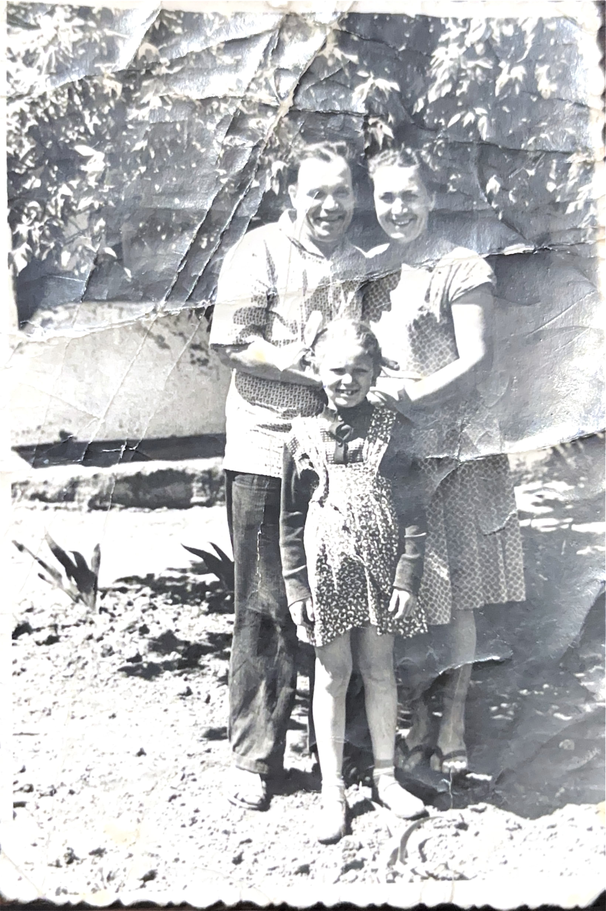
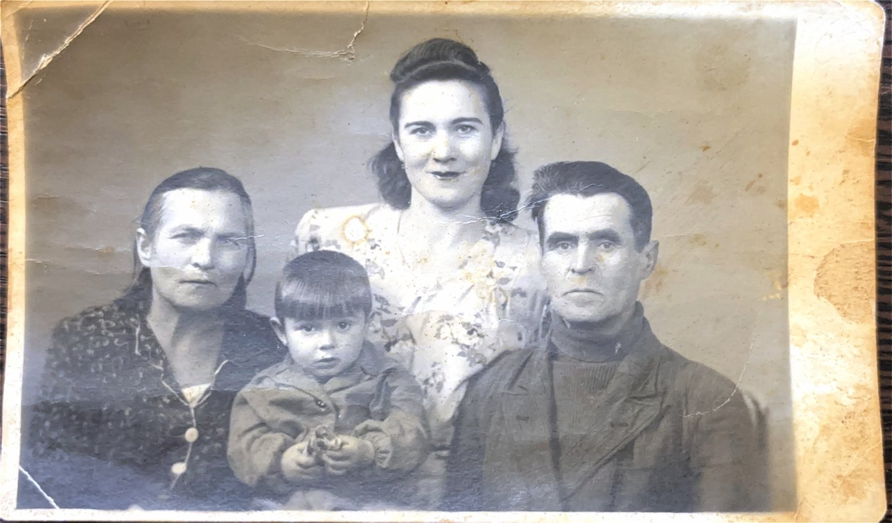
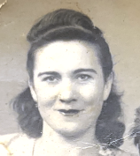

03
Фотографии


_page-0001.jpg)




«Сила была в доброте и правде»

Валентина Ивановна Левкина родилась 19 января 1925 года. Её жизнь пришлась на одно из самых тяжёлых времён XX века, когда судьба человека зависела не только от его характера и воли, но и от войны, голода, страха, насилия и чужих решений. На её долю выпало многое - и то, что ломает, и то, через что приходится проходить, чтобы потом заново собирать свою жизнь почти с нуля.
Самым страшным и самым определяющим испытанием в её судьбе стал концлагерь Равенсбрюк. В годы войны Валентина Ивановна оказалась его узницей. Для семьи эта часть её жизни осталась не просто как исторический факт, а как живая, тяжёлая память, которую невозможно вычеркнуть. По воспоминаниям близких, даже в лагере она не потеряла в себе человеческое. По ночам пробиралась к мусорным жбанам, собирала огрызки и картофельные шкурки и приносила их своей больной подруге Симе, чтобы та не умерла от голода. В этой истории особенно сильно чувствуется, какой она была - не только жертвой страшного времени, но и человеком, который даже в нечеловеческих условиях оставался способным спасать другого.
Позже Валентина Ивановна бежала из лагеря вместе с Симой. После побега их укрыла немка, спрятав у себя в погребе, где они какое-то время скрывались. Потом, после освобождения поляками, им удалось выбраться и приехать в Ростов-на-Дону. В семье помнили и то, что после возвращения Валентина Ивановна и Сима жили рядом. История Равенсбрюка, побега и спасения Симы сохранилась в памяти близких как один из главных узлов всей её жизни. Это был не просто эпизод прошлого, а та часть судьбы, через которую потом по-другому читается всё остальное - её характер, её жёсткость, её сила и её способность жить дальше.
После войны Валентина Ивановна не замкнулась в пережитом и не растворилась в своей боли. Она продолжила строить жизнь. Училась в медучилище на акушерку. В семье запомнился даже один бытовой, человеческий эпизод из этого времени: на экзамене её спросили, сколько зубов у новорождённого, и она ответила неправильно, из-за чего получила незачёт. Эта маленькая деталь звучит почти неожиданно рядом с лагерем и войной, но именно в таких деталях и чувствуется живая судьба - не памятник, а человек, который после страшного прошлого снова учился, работал, ошибался и продолжал идти вперёд.
По воспоминаниям семьи, Валентина Ивановна работала в медицине, в том числе в ЦГБ, а также трудилась в ресторане посудницей. О её трудовой жизни напоминает и сохранившаяся в семье памятная статуэтка с надписью: «Вале в день рождения от участка цеха 16, 1964 год». Эта вещь осталась не просто как предмет, а как живое материальное свидетельство её времени, её круга людей и той жизни, которую она вела после войны.
Её судьба не была гладкой и удобной для красивого пересказа. В ней были и тяжёлые, спорные, непростые страницы. Валентина Ивановна сидела в тюрьме за сделанный на дому аборт, а затем была освобождена по амнистии, так как у неё были несовершеннолетние дети. Это тоже часть её биографии - не приглаженной, не выдуманной, а настоящей. В её жизни было не только выживание, но и тяжёлый выбор, и суровая реальность времени, в котором многое решалось не по учебнику и не по морализаторским схемам, а по обстоятельствам.
Важной частью её жизни стала семья. Мужем Валентины Ивановны был Левкин Фёдор Афанасьевич. У неё было трое детей - Владимир Николаевич Кучеренко, Наталья Фёдоровна Зинченко и Ирина Фёдоровна Левкина. Фамилия Кучеренко была материнской и досталась старшему сыну Владимиру. Главным смыслом её жизни, по воспоминаниям родных, были дети, дом и семья. В этом доме было всё настоящее - работа, строгость, забота, конфликты, примирения, привычки, праздники и характер. Позже она дожила и до внуков. Дедушка своих внучек уже не увидел, а Валентина Ивановна успела застать Марину и Оксану. Марину она ласково называла Марьяной и, как вспоминали в семье, покупала ей дорогие вещи. По словам близких, внуков она любила особенно нежно.
По воспоминаниям дочерей, Валентина Ивановна была женщиной очень живой, сильной и работящей. Она любила красиво одеваться, ходила к модистке, шила платья из креп-жоржета и панбархата, носила украшения - перстни, цепочки, серьги. Пользовалась духами «Каменный цветок». После лагеря долго курила Беломорканал, а позже, когда здоровье стало хуже, перешла на более слабые сигареты. Любила вино. В семье вспоминали и то, что ей нравились цыганские песни. В ней сочетались и тепло, и строгость, и забота, и жёсткость, и вкус к жизни, и внутренняя выносливость. Она не была человеком бесцветным или тихим - наоборот, в ней было много энергии, характера и настоящей силы.
Последние годы её жизни были связаны с тяжёлой болезнью. У Валентины Ивановны обнаружили онкологию желудка. Планировалась операция стоимостью 1000 рублей, но врач сказал, что помочь уже ничем не может - было слишком поздно. Она умерла дома 3 мая 1985 года.
После себя Валентина Ивановна оставила не только фотографии, документы и семейные вещи. Она оставила детей, внуков, дом и память о женщине, которая прошла через концлагерь, побег, тяжёлую работу, тюрьму, болезнь и суровые обстоятельства жизни и всё равно осталась в памяти близких живой, сильной и настоящей.




Место захоронения уточняется.
Ростов-на-Дону
О нас заботились по-простому, по-домашнему. Мыли нам голову в корытах, мазали пятки козьим жиром, чтобы не простужались, обували, одевали, отправляли в пионерлагеря. Это всё было без лишних слов, просто потому что нас любили.
Мама любила хорошо одеваться. Ходила к модистке, шила платья, носила украшения. Она не хотела выглядеть как попало. В ней всегда было чувство к красоте и к себе.
Мама ходила мелкими шагами и всегда возмущалась на тех, кто широко шагает. Это такая мелочь, но именно такие вещи запоминаются сильнее всего - походка, интонация, привычки.
Мама очень любила внуков. Даже говорила, что внуков любишь по-особенному. Я тогда не понимала, а она мне отвечала: «Вот будут у тебя внуки - тогда поймёшь.»
У мамы был характер, и сказать она могла жёстко. «Не нравится выть, как моя стая воет, - вон со двора.» А мне самой говорила: «Придёт время - локти кусать будешь.» С возрастом понимаешь - она многое видела наперёд.
Телевизор тогда был такой, что пол-улицы приходило смотреть. Для нас это было целое событие. Дом жил не только своей семьёй - вокруг всегда были люди, соседи, шум, движение.
Я совсем маленькая была, не помню её почти. Один момент всплывает: на каменке в зале она мне подарила кукольную коляску - пластмассовую, бело-голубую, для маленького пупсика. Это всё, что осталось в памяти. Но это осталось.
Дедушка своих внучек уже не видел, а бабушка видела меня и Оксану. Меня она ласково называла Марьяной. В семье вспоминали, что мне она покупала дорогие вещи. Для меня это осталось как память о её тепле и о том, что она успела побыть рядом с нами.
в знак памяти и уважения